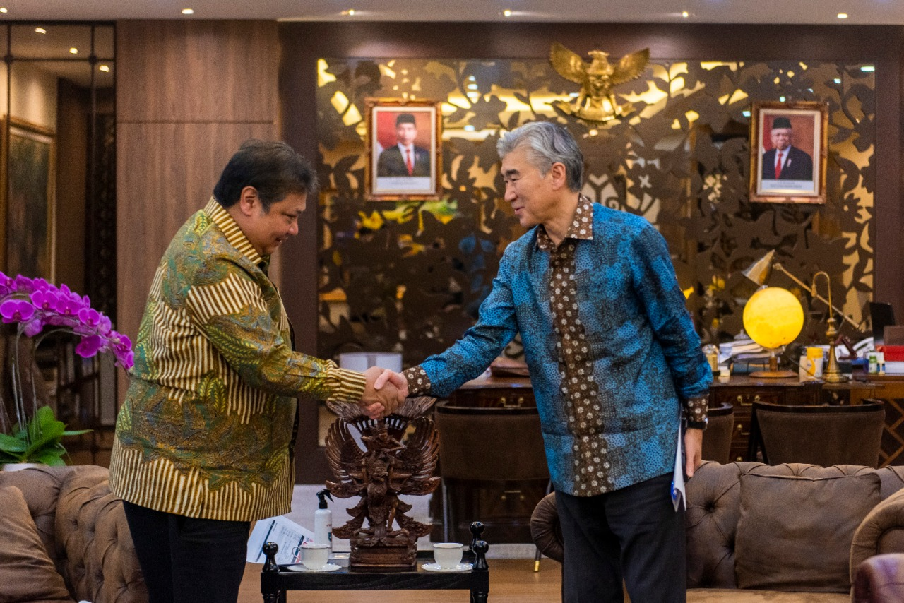
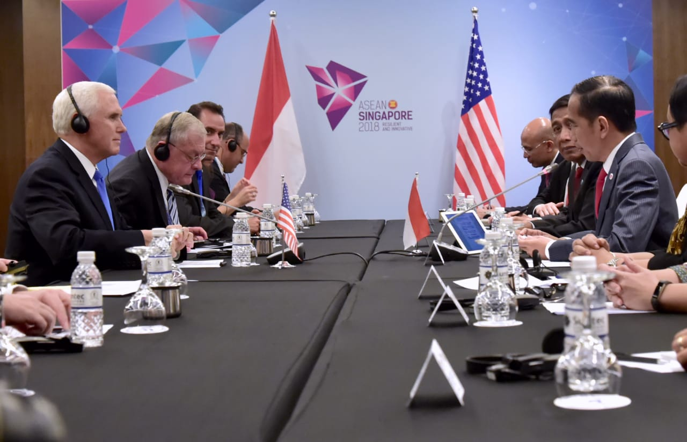
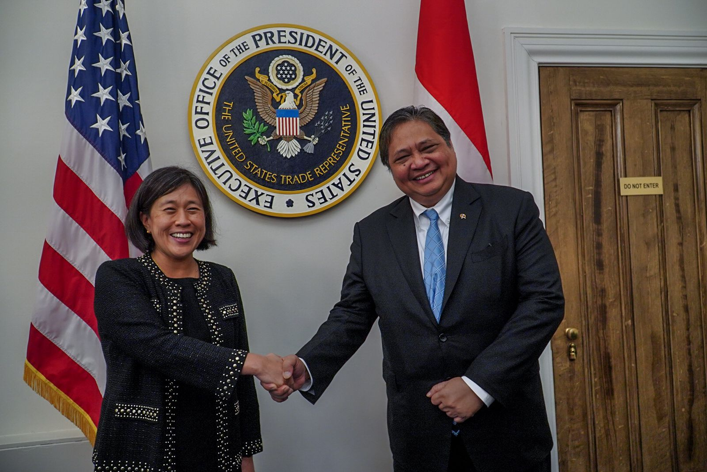
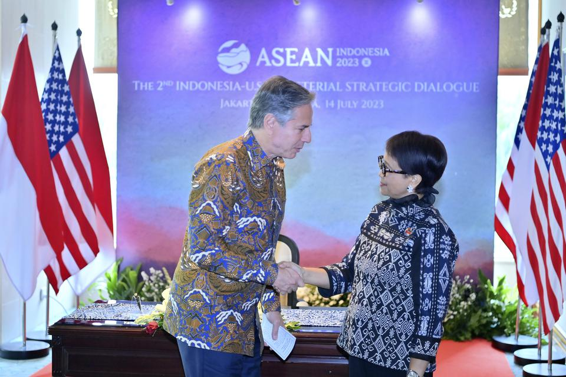
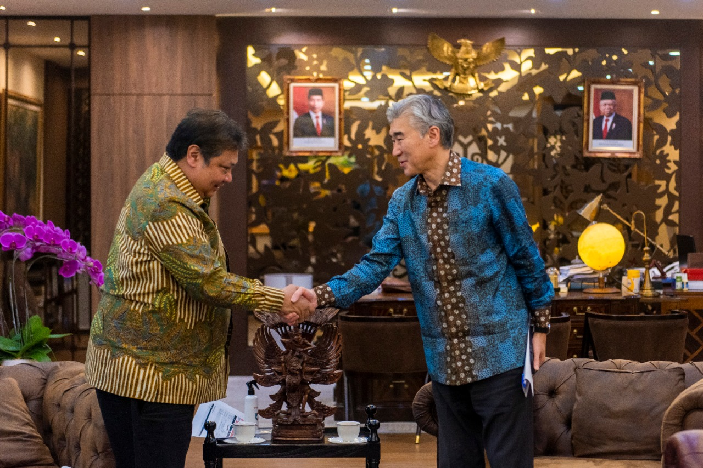
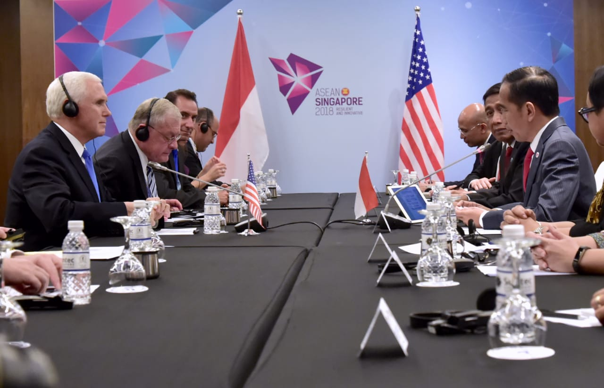
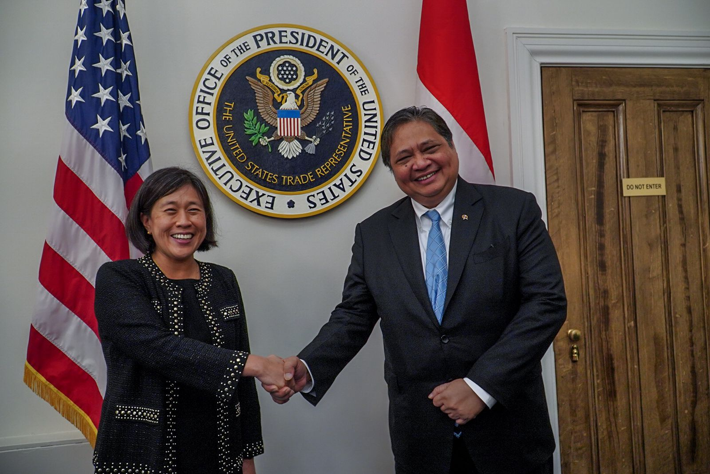
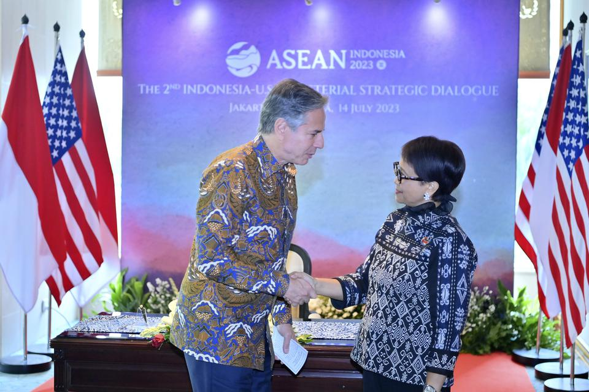

Penjelasan
Kerja sama bilateral antara Indonesia dan Amerika Serikat di bidang ekonomi dan perdagangan telah
berkembang pesat dalam beberapa dekade terakhir dan mencakup berbagai aspek yang saling menguntungkan.
Kerja sama ini tidak hanya melibatkan sektor perdagangan dan investasi, tetapi juga sektor-sektor
strategis lainnya seperti energi, teknologi, dan pembangunan berkelanjutan. Kedua negara berkomitmen
untuk memperdalam hubungan ini melalui berbagai inisiatif dan forum yang ada.
A. Perjanjian Perdagangan dan Sistem Preferensial
Salah satu bentuk kerja sama utama dalam bidang ekonomi adalah melalui perjanjian perdagangan, khususnya
Generalized System of Preferences (GSP). GSP memungkinkan produk-produk tertentu dari Indonesia, seperti
tekstil, rempah-rempah, dan produk pertanian, untuk masuk ke pasar perdagangan di Amerika Serikat dengan
tarif yang lebih rendah atau mungkin tanpa tarif sama sekali. Ini memberikan peluang besar bagi sektor
ekspor Indonesia, meningkatkan daya saing produk-produk asli Indonesia di pasar global. Sebagai contoh,
ekspor produk tekstil dan pakaian jadi Indonesia ke Amerika Serikat memperoleh manfaat dari sistem ini,
yang mendorong pertumbuhan sektor industri tekstil di Indonesia.
B. Investasi di Sektor Energi, Teknologi, dan Infrastruktur
Kerja sama ini juga mencakup investasi besar dalam sektor-sektor vital. Dalam hal energi, Amerika
Serikat telah banyak berinvestasi dalam pengembangan energi terbarukan di Indonesia, seperti proyek
pembangkit listrik tenaga surya dan angin. Sebagai contoh, perusahaan energi besar Amerika seperti
General Electric (GE) dan ConocoPhillips telah berperan dalam proyek energi di Indonesia, seperti
pembangunan pembangkit listrik berbasis gas dan eksplorasi energi geothermal.
Di sektor teknologi, Indonesia dan Amerika Serikat juga telah bekerja sama dalam mempercepat
transformasi digital. Perusahaan teknologi Amerika Serikat seperti Google, Facebook, dan Microsoft telah
berinvestasi di Indonesia, membantu memperkuat ekosistem digital melalui penyediaan platform, data
center, dan layanan cloud. Misalnya, Google mendirikan pusat data di Indonesia, yang mendukung
pengembangan ekonomi digital dan meningkatkan konektivitas internet di Indonesia.
Di sektor infrastruktur, proyek-proyek besar seperti pembangunan jalan tol, pelabuhan, dan sistem
transportasi massal di kota-kota besar di Indonesia juga melibatkan perusahaan-perusahaan Amerika
Serikat. Salah satu contoh nyata adalah kerja sama dalam pembangunan infrastruktur yang difasilitasi
oleh bantuan dana dan teknologi dari lembaga-lembaga keuangan Amerika Serikat seperti Millennium
Challenge Corporation (MCC).
C. Bantuan Pembangunan dan Dukungan Multilateral
Indonesia juga menerima bantuan pembangunan dari Amerika Serikat melalui program seperti Millennium
Challenge Corporation (MCC). Program ini telah mendanai berbagai proyek yang berfokus pada pengurangan
kemiskinan, pembangunan infrastruktur, serta peningkatan kapasitas ekonomi dan pemerintahan. Sebagai
contoh, MCC telah mendanai proyek infrastruktur air bersih dan irigasi di Indonesia yang bertujuan untuk
meningkatkan kesejahteraan masyarakat pedesaan.
Selain itu, kedua negara bekerja sama dalam forum multilateral seperti Asia-Pacific Economic Cooperation
(APEC) dan World Trade Organization (WTO), yang memungkinkan mereka untuk bersama-sama memperjuangkan
perdagangan bebas dan inklusif, serta menyelesaikan masalah ekonomi regional dan global. Dalam APEC,
Indonesia dan Amerika Serikat telah berkolaborasi untuk memfasilitasi perdagangan bebas, terutama dalam
sektor ekonomi digital, energi terbarukan, dan perubahan iklim.
D. Peningkatan Kerja Sama dalam Ekonomi Digital dan Energi Terbarukan
Ekonomi digital dan energi terbarukan menjadi fokus utama dalam kerja sama kedua negara. Dengan semakin
pesatnya perkembangan teknologi, Indonesia diharapkan dapat mempercepat transformasi digital, yang
sejalan dengan inisiatif pemerintah Amerika Serikat untuk mendukung ekonomi digital di seluruh dunia.
Melalui platform seperti Indonesia-US Economic Forum (IEAF), kedua negara membahas berbagai isu terkait
ekonomi digital, mulai dari penyediaan infrastruktur teknologi informasi, pengembangan e-commerce,
hingga regulasi data pribadi.
Selain itu, sektor energi terbarukan menjadi prioritas dalam konteks perubahan iklim global. Amerika
Serikat telah mengalirkan investasi dan teknologi dalam proyek-proyek energi terbarukan di Indonesia.
Salah satu contoh adalah kerja sama dalam pengembangan pembangkit listrik tenaga surya dan proyek-proyek
pembangkit listrik tenaga air. Proyek-proyek ini tidak hanya mendukung keberlanjutan energi di Indonesia
tetapi juga berkontribusi pada pengurangan emisi karbon global.
E. Tantangan dalam Kerja Sama
Meskipun kerja sama Indonesia dan Amerika Serikat di bidang ekonomi dan perdagangan sangat berpotensi,
masih ada beberapa tantangan yang perlu diatasi. Salah satunya adalah hambatan non-tarif yang sering
kali menjadi kendala, seperti perbedaan standar produk, regulasi yang rumit, serta proteksionisme.
Misalnya, sektor pertanian Indonesia menghadapi hambatan tarif dan regulasi yang ketat untuk mengekspor
produk seperti kelapa sawit dan kopi ke Amerika Serikat.
Selain itu, perbedaan dalam kebijakan lingkungan dan sosial juga menjadi isu penting. Indonesia sering
kali menghadapi kritik terkait kebijakan deforestasi dan pengelolaan sumber daya alam, yang mempengaruhi
hubungan perdagangan dengan Amerika Serikat. Oleh karena itu, penting bagi kedua negara untuk mengadakan
dialog yang konstruktif guna mengatasi isu-isu ini, serta memastikan keberlanjutan kerja sama mereka
dalam jangka panjang.
F. Prospek Masa Depan
Meskipun ada tantangan, prospek kerja sama Indonesia dan Amerika Serikat di bidang ekonomi dan
perdagangan tetap sangat besar, terutama di sektor teknologi, perubahan iklim, dan pembangunan
berkelanjutan. Di masa depan, kedua negara dapat lebih memperkuat hubungan mereka dengan memanfaatkan
peluang dalam ekonomi hijau, teknologi ramah lingkungan, dan investasi di sektor-sektor yang
berkelanjutan. Selain itu, semakin berkembangnya sektor ekonomi digital di Indonesia juga akan membuka
peluang baru bagi perusahaan-perusahaan Amerika Serikat untuk berinvestasi dan berkolaborasi dalam
berbagai inisiatif yang mendukung inovasi dan perkembangan teknologi.
Secara keseluruhan, hubungan ekonomi dan perdagangan antara Indonesia dan Amerika Serikat memiliki
potensi besar untuk tumbuh dan memberikan manfaat jangka panjang bagi kedua negara, sepanjang mereka
dapat mengatasi tantangan yang ada dan terus mendorong dialog yang konstruktif dalam berbagai forum dan
inisiatif bersama.